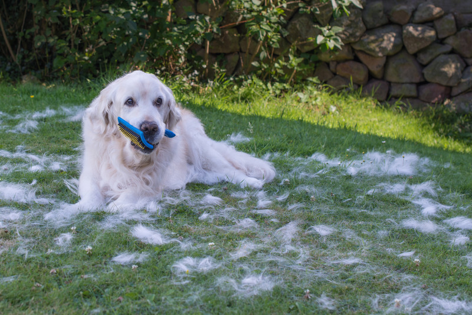

As pet owners, we love our furry friends, but shedding can be a bit overwhelming at times. If you've ever found yourself buried in a pile of pet hair or struggling with allergies triggered by your pet's shedding, you're not alone. Shedding is a natural process for dogs and cats. Understanding it can help you manage it better, keeping your home and pet healthier and happier.
Dogs and cats shed their fur as part of a natural process to get rid of old or damaged hair and make way for new growth. Factors such as breed, age, health, and season can all influence the shedding cycle. According to the American Kennel Club (AKC), shedding can vary widely depending on breed characteristics. Breeds like Huskies, Golden Retrievers, and German Shepherds tend to shed more than others because of their double coats.
To gain a better understanding of your pet's shedding, let's break down the shedding cycle into four main phases:
As mentioned above, shedding can vary widely depending on breed characteristics. Pets with continuously growing hair (poodles, shih tzus) have a hair cycle with a long anagen phase that can last for several years.This explains why some breeds have long hair that must be trimmed regularly.
On the other hand, plush coated breeds (chow chows, pomeranians) have a hair cycle with a long telogen phase where a brief anagen phase produces short hair that is kept during a longer telogen phase, which can last for several years.
Dogs with a double coat (collies, samoyeds) tend to shed more on a seasonal basis. The change in seasons will throw their hair cycle into the anagen phase (summer and winter) and then into the exogen phase (spring and fall).
Now that we understand the shedding cycle, let's explore some practical tips to reduce and manage shedding and keep your home clean and your pet comfortable:
Shedding is a natural process for dogs, and understanding your pet's shedding cycle can help you manage it effectively. To keep your home and pet healthy, remember to brush your pet often. Make sure to give them a balanced diet. Also, use a good shed control shampoo and conditioner when bathing them. Although it can be inconvenient, shedding is just a small price to pay for the unconditional love and companionship our furry friends bring into our lives!